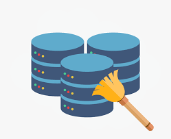

The objective of this project is to conduct an analysis of the Rebrickable LEGO Dataset using the data manipulation and exploration capabilities of the Pandas library.Through the examination of real-world scenarios, the project aims to demonstrate the utilization of various Pandas functions, such as MERGE, GROUPBY and others to address complex data analysis questions. Specifically, the project will focus on the following skills: JOINING DATAFRAMES, CREATING DERIVED COLUMNS, and understanding of various methods for exploring data with Pandas.
This project is dedicated to user sentiment analysis utilizing various PYTHON, NATURAL LANGUAGE PROCESSING libraries. Leveraging NLTK, I conducted sentiment analysis on user reviews to ascertain POLARITY SCORES, subsequently categorizing them as POSITIVE, NEGATIVE, or NEUTRAL based on their sentiment scores. This phase underscores my adeptness in employing NLP techniques to extract valuable insights from textual data, demonstrating a keen understanding of user sentiments.
Furthermore, within the same project, I delved deeper into the analysis by employing SCIKIT-LEARN'S NON-MATRIX FACTORIZATION. This allowed me to model the topics of discussion within each user review, thereby enhancing the project's depth and providing additional insights into user preferences and concerns. Through this approach, I showcase not only my proficiency in NLP methodologies but also my ability to leverage advanced techniques to uncover nuanced patterns within user-generated content.
This project is dedicated to crafting a Chat-GPT clone using PYTHON in conjunction with the OPENAI API. This endeavor aims to replicate the conversational capabilities of Chat-GPT while incorporating a MEMORY WINDOW BUFFER MODULE to retain the context of ongoing interactions. This feature significantly enhances the model's ability to respond effectively to context-related questions, simulating a more human-like conversation experience.
Additionally, the project includes the implementation of a user interface using Python's STREAMLIT library. This dynamic interface enhances user-friendliness and interactivity, making the Chat-GPT clone more accessible and engaging for users. By leveraging Streamlit, the interface becomes more intuitive and responsive, further bridging the gap between human and machine interaction.
This project is about Harnessing PYTHONS's SCIKIT-LEARN, BFSI has culminated in a powerful customer churn prediction model, leveraging LightGBM to achieve a remarkable 98% accuracy rate. This proficiency empowers proactive retention strategies, underlining our commitment to leveraging cutting-edge technology for sustainable business growth.
Data was initially cleaned and then preprocessed, for the data to be in usable format for MACHINE LEARNING models using different scikit-learn sub libraries, like ONE-HOT ENCODERS, STANDARD SCALAR , SIMPLE IMPUTERS
This project is about utilizing PYTHON along with BEAUTIFUL SOUP and SELENIUM WEBDRIVER to automate the extraction of ESG (Environmental, Social, and Governance) scores for multiple companies. By seamlessly navigating through search bars, my script efficiently gathered pertinent ESG DATA, reflecting my commitment to harnessing technology
It underscores my proficiency in WEB SCRAPING and AUTOMATION, crucial skills in modern data-driven environments. Eventually, each indivual datasets were merged to get a master dataset to create a PowerBI score card
This project mainly focuses on predicting housing prices using California's housing dataset. It begins with EXPLORATORY DATA ANALYSIS (EDA) to understand the dataset's characteristics. A custom TRANSFORMER FUNCTION is then developed to PREPROCESS the raw data, converting columns into numerical or categorical formats as necessary, and generating new features. Additionally, a comprehensive PIPELINE manages missing values, transforms data, and scales features using various techniques like STANDARD SCALAR, ensuring robust preprocessing.
In the subsequent phase, multiple machine learning models are developed, including LINEAR REGRESSION, DECISION TREE REGRESSOR, and RANDOM FOREST REGRESSOR. Rigorous evaluation using k-fold cross-validation determines each model's performance on unseen data. Finally, the Random Forest Regressor, fine-tuned via HYPERPARAMETER TUNING TECHNIQUES like GRID SEARCH CV and RANDOM SEARCH CV , achieves optimal performance. Evaluation metrics like ROOT MEAN SQUARED ERROR validate the model's accuracy, highlighting my expertise in machine learning methodologies and model evaluation.

This project prioritizes robust DATA CLEANING and EXPLORATION methodologies within SQL SERVER. Leveraging SQL's powerful querying capabilities, I execute tasks such as REMOVING DUPLICATES, HANDLING NULL VALUES, and STANDARDIZING DATA FORMATS like data of birth(DOB) and phone-numbers to ensure data integrity.
Furthermore, within SQL Server, I delve into comprehensive data exploration techniques to gain deeper insights Leveraging SQL's querying functionalities, I perform exploratory data analysis (EDA) tasks such as summarizing key statistics, identifying patterns, and uncovering correlations between variables. Through the execution of SQL queries, I generate DESCRIPTIVE SUMMARIES to facilitate a deeper understanding of the dataset's characteristics and underlying trends.